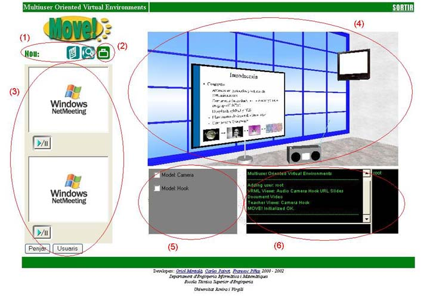
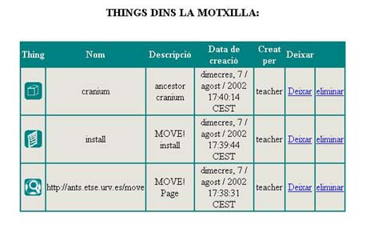

2.5 Entorn 3D del Place
�s aqui on podrem dir que realment estem dins el MOVE!.
La pantalla que tindr� l'usuari de MOVE! davant seu ser� la seg�ent:

Podem veure que consta de diferents parts:
- Barra de Tools: Est� composta de les Tools que permeten nom�s la creaci� de Things del seu tipus dins l'entorn 3D, i que a m�s estan actives dins aquest Place:
- File
- URL
- Object
Podrem crear Things d'aquests tipus clicant sobre la icona de la Tool que representen.
- Motxilla d'usuari: Clicant sobre aquesta icona podrem veure totes les Things de tipus URL, File i Object que portem a la motxilla, i que s�n c�pia d'altres ja existents en algun dels Places

Clicant sobre treurem la thing c�pia de la motxilla i la deixarem dins el Place, a la posici� actual on ens trobem. Clicant sobre eliminarem la c�pia de la motxilla.
- Tool Netmeeting: Sols apareixer� si ha estat activada per a ser utilitzada dins aquest Place
- Entorn 3D del Place: Podrem moure'ns per ell i interectuar amb tots els models que hi hagi carregats de les Tools i sobre els quals tinguem perm�s.
- Models sense representaci� 3D en el Place: Activant la casella corresponent accedirem al control del model.
- Finestra de xat: Ens permetr� comunicar-nos amb tots els usuaris que estan en el Place. A m�s, podrem enviar missatges privats a qualsevol d'ells introduint la seg�ent comanda:
/priv login_usuari missatge
Per �ltim, si cliquem sobre el logo  tornarem a la zona THINGS del Place. I si cliquem sobre
sortirem de l'entorn 3D i tornarem a la pantalla d'autentificaci�.
tornarem a la zona THINGS del Place. I si cliquem sobre
sortirem de l'entorn 3D i tornarem a la pantalla d'autentificaci�.